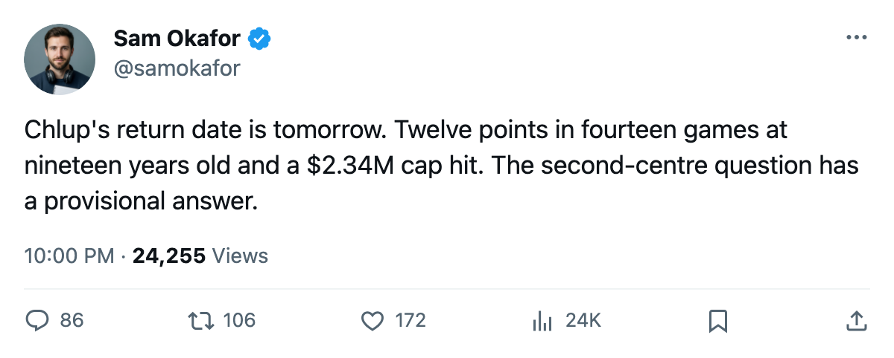

Leafs Practice Notes: Chlup back tomorrow, and five names on the Index risers
The 19-year-old second centre carries 12 points and a return date that lands one day from now
 Sam OkaforLeafs beat reporter · Queen City Telegram
Sam OkaforLeafs beat reporter · Queen City Telegram
Petr Chlup87 has a return date of 2005-11-10, which is tomorrow. The 19-year-old centre carries 12 points in 14 games on a $2.34M cap hit and should draw back into the lineup for Friday against  Los Angeles Kings.
Los Angeles Kings.
He skated on the second line before his absence began. Toronto lost 4-2 at  Dallas Stars on Monday without him in the top six, a night that ended a 6-game win streak. The Leafs outshot Dallas 33 to 23 and scored twice.
Dallas Stars on Monday without him in the top six, a night that ended a 6-game win streak. The Leafs outshot Dallas 33 to 23 and scored twice.
What the shot sheet said Monday
The shot number is not new. Toronto has been outshot in most of its wins and has now lost despite outshooting. Monday was the first game this season where the Leafs held the shot edge and came home without a point. They had 33 attempts on goal, scored 2, and gave up 4 on 23.
Today Toronto visits  San Jose Sharks for the first time this season. The Sharks are 4-4-3 with 13 points in 12 games, on a 3-game losing streak, and have allowed 29 goals in 12 games.
San Jose Sharks for the first time this season. The Sharks are 4-4-3 with 13 points in 12 games, on a 3-game losing streak, and have allowed 29 goals in 12 games.
 Roberto Luongo95 dressed for all 5 of his starts. Maxime Ouellet86 has 3 starts. Mikael Tellqvist73 is not dressed, carries 6 appearances, and sits on the Bureau's Development Index fallers list at -5, reading 73 against a base of 77.
Roberto Luongo95 dressed for all 5 of his starts. Maxime Ouellet86 has 3 starts. Mikael Tellqvist73 is not dressed, carries 6 appearances, and sits on the Bureau's Development Index fallers list at -5, reading 73 against a base of 77.
Five on the risers
The Index carries five Maple Leafs on its risers list this edition.
 Marian Gaborik99 reads +11, the largest jump on the list for Toronto. His overall sits at 99.
Marian Gaborik99 reads +11, the largest jump on the list for Toronto. His overall sits at 99.  Rostislav Klesla87 and
Rostislav Klesla87 and  Stanislav Chistov87 are both +8.
Stanislav Chistov87 are both +8.  Rick Nash85 is +7.
Rick Nash85 is +7.
 Jamie Lundmark81 also reads +8, though the points column shows 0 in 9 games at 2.8 minutes a night.
Jamie Lundmark81 also reads +8, though the points column shows 0 in 9 games at 2.8 minutes a night.
The Northeast board
 Toronto Maple Leafs 22 points, 14 games played.
Toronto Maple Leafs 22 points, 14 games played.  Boston Bruins 17, 12 games played, 2 in hand.
Boston Bruins 17, 12 games played, 2 in hand.  Buffalo Sabres 12, 13 games.
Buffalo Sabres 12, 13 games.  Montreal Canadiens 11, 13 games.
Montreal Canadiens 11, 13 games.  Ottawa Senators 7, 10 games.
Ottawa Senators 7, 10 games.
Boston visits Toronto Maple Leafs on 2005-11-19.
